1
Bring your information together
Add existing reports, connect a supported wearable and tell Orb about your goals and everyday habits.
Orb by Cureocity
Your personal AI health agent
Your reports, wearable data and everyday habits tell different parts of your story. Orb brings them together to help you understand what matters, plan your next steps and follow your progress.
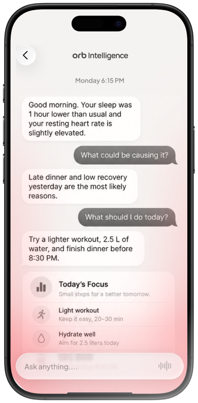
A day with Orb — illustrative example
A blood report gives you one view. Your wearable adds another. Your meals, symptoms and daily routine add context.
Orb helps you consider these together, so your next step makes more sense.
Add existing reports, connect a supported wearable and tell Orb about your goals and everyday habits.
Explore patterns and changes alongside the information you have shared.
Use your meal and workout plans, track your habits and review progress over time.
Connect a supported device, add existing reports or begin with your daily habits. You can build your health picture over time.
Practical guides to the information behind your health decisions.
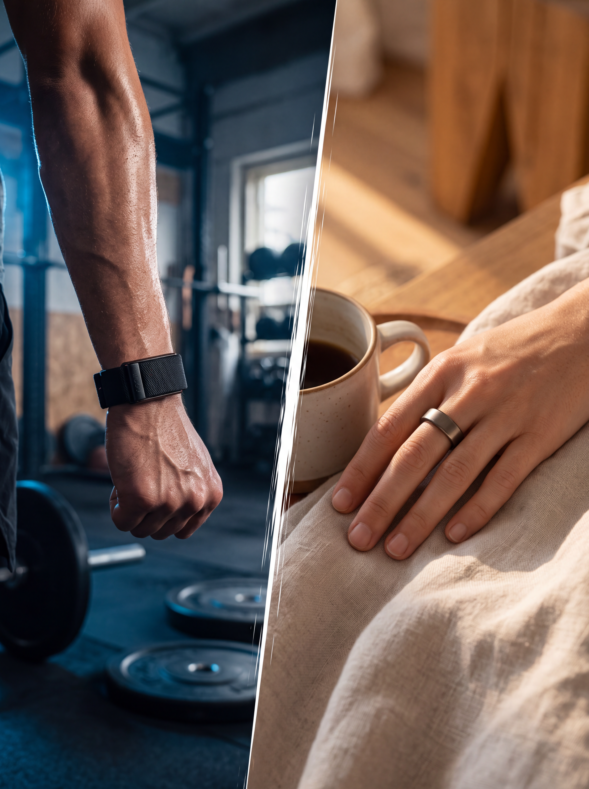
Understand the different kinds of information devices collect and how they can contribute to your daily view.
Learn how to organise your results and prepare useful questions for your next consultation.
Explore how your goals, daily habits and existing information can help you begin.
From choosing your next meal to understanding a report, Orb helps you connect your health information with practical actions.
Keep your health reports in one place and review them alongside your history and everyday habits.
Illustrative example
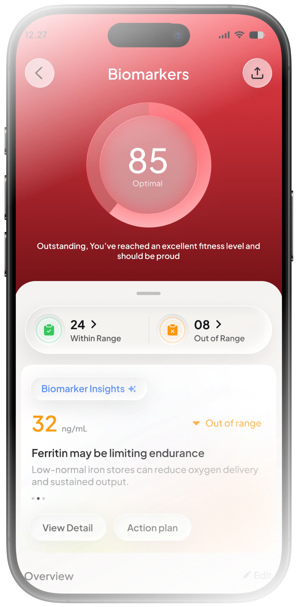
Log periods, symptoms and how you feel. Follow your history and see estimates for upcoming cycle dates.
Illustrative example
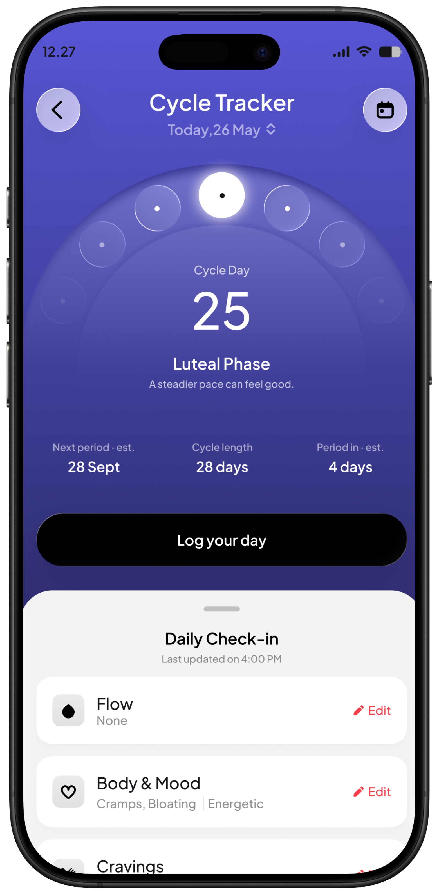
Record what you eat and review estimated calories and nutrients. Check portions and make adjustments as you go.
Illustrative example
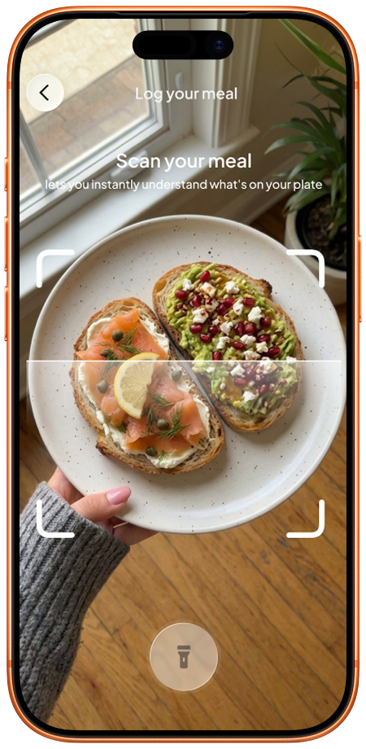
Keep your meals, movement, recovery and planned activities in one daily view.
Illustrative example
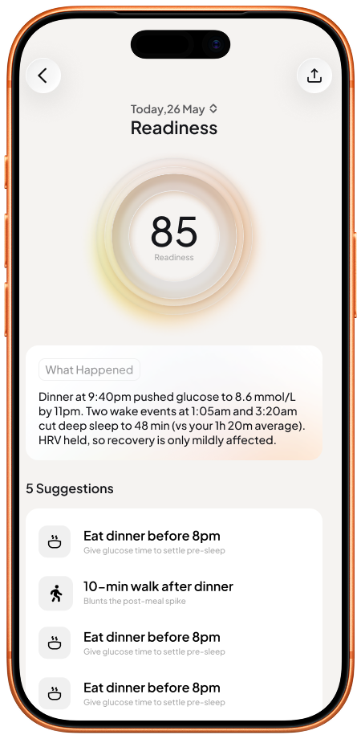
Connect a supported device, add existing reports or begin with your daily habits. You can build your health picture over time.
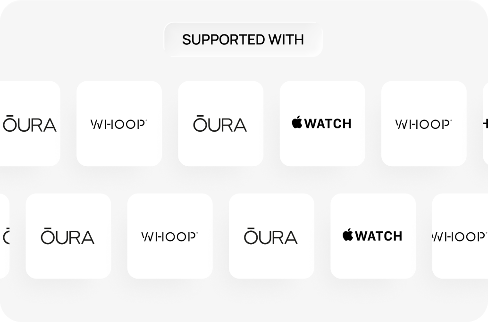
See What You Can ConnectAvailable data depends on your device, permissions and supported integrations. You can use Orb without connecting a wearable.
Log your exercise, weight and repetitions by voice between sets. Review the entry, then get back to your workout.
“Log bench press: 40 kilograms, 10 reps.”
Illustrative example · Play the demo to review the entry
Your goals matter. So do your usual foods, preferences, schedule and preparation time. Bring them together in a plan you can follow.
Illustrative example
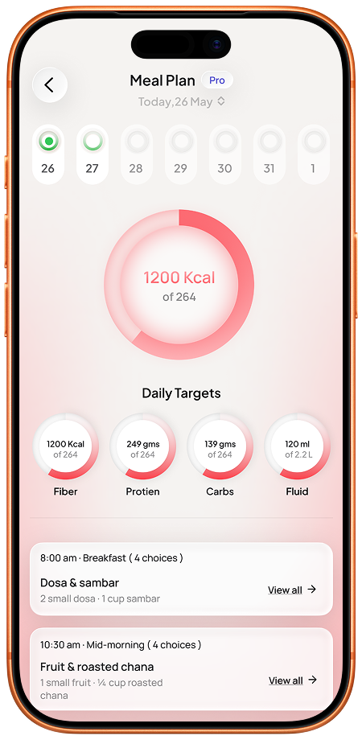
Build a plan around your goals, experience, available days, equipment and movement assessment. Review it as your needs change.
Illustrative example
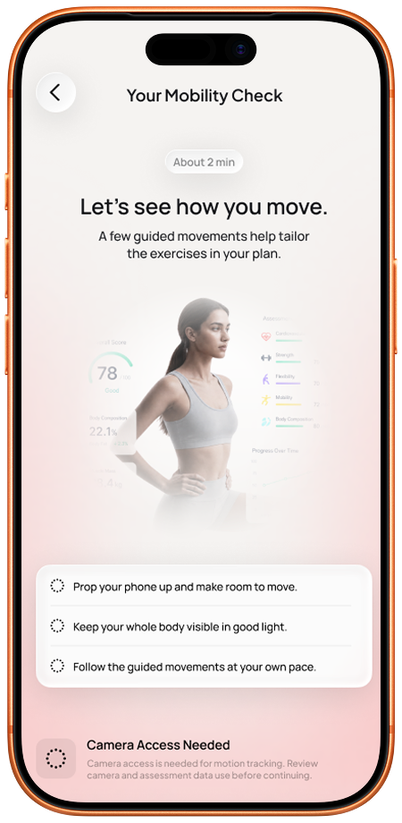
When you want professional guidance, explore care options with doctors, dietitians, fitness trainers and psychologists or health coaches.
With an eligible care plan, the information you log can help your assigned professional understand your routine, review progress and guide your next steps.
Professional access and follow-up arrangements depend on your plan and location.
Your dietitian sets your nutrition targets. You log your meals in Orb. Your assigned dietitian can review those entries alongside your plan, making follow-up conversations more specific.
Cureocity Blueprint brings your assessment findings and professional consultations into a personal health and fitness overview.
Review your history, nutrition and movement with the professionals included in your assessment package, then bring the findings together in your Blueprint.
See the selected assessment package for included consultations, tests and follow-up.
Explore a programme that connects your goals with the right assessment, everyday support and professional guidance.
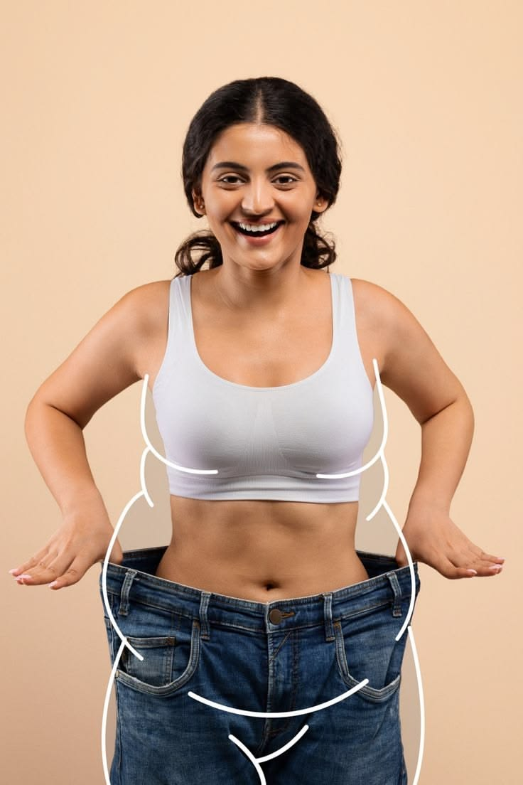
Bring food, movement, habits and professional guidance into a plan that fits your life.
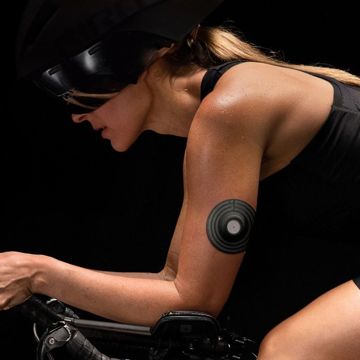
Review glucose patterns alongside meals, activity and daily routines, with professional guidance through your care programme.
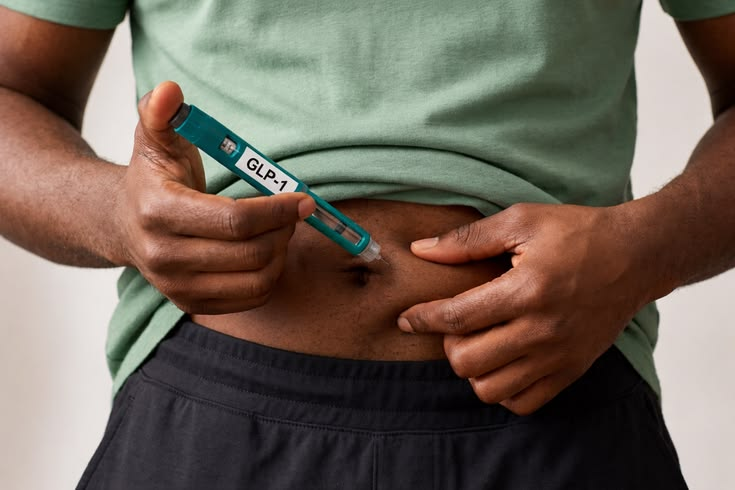
Explore nutrition, movement and follow-up support alongside clinician-prescribed treatment.
Give long-term health a place in your daily routine, with attention to fitness, nutrition, recovery and appropriate preventive care.
Programme availability, eligibility and inclusions vary by location and plan.
Start with app-based guidance, explore professional care or connect your routine with an in-person hub.
Compare access to daily insights, tracking and planning tools.
Explore consultations and care programmes around your goals.
View Care OptionsExplore hub memberships, training and assessment services.
View Hub OptionsSee current prices, inclusions and availability before choosing your plan.
No. You can begin with your profile, daily habits and existing reports. A supported wearable can add information where available.
You can begin with reports you already have. Any additional tests or assessments depend on your needs and the service you choose.
Orb brings supported wearable information together with your reports, everyday habits and planning tools. Eligible care plans also connect relevant information with your assigned professionals.
Professional access depends on your plan. Check the included consultations, follow-up arrangements and availability before subscribing.
Orb provides AI-supported information, tracking and guidance. Clinical assessment, diagnosis and treatment require an appropriately qualified professional.
Check the supported integrations list for current compatibility. Available information may differ between devices and the permissions you grant.
Compare the features and professional services included in each option. For assessments, ongoing care or hub services, contact the team to discuss the available choices.
Read how Cureocity collects, uses and shares information, and how to make requests about your data.
Bring your fitness goals into a setting where assessment, training, nutrition and professional support can work together.
At Cureocity’s Health & Fitness Hubs, explore in-person services that connect your sessions with the progress you track in Orb.
View each location’s services and membership options.
Bring what you know about your health into Orb—and start connecting it with your everyday decisions.